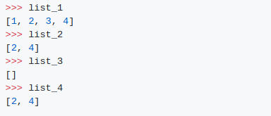
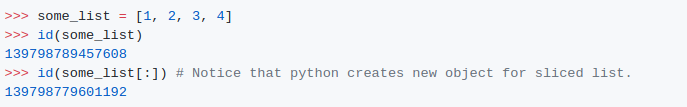

Output
당신은 [2,4]의 결과값을 예측할 수 있습니까?
설명:
반복하고 있는 개체를 변경하는 것은 결코 좋은 생각이 아닙니다.대신 올바른 방법은 개체의 복사본을 반복하는 것이며, list_3[:]은 바로 그렇게 하는 것 입니다.

delvar_name은(는) Local 또는 Global namespace에서 var_name의 묶음을 제거합니다.(따라서 list_1은 영향을 받지 않습니다).
remove는 특정 인덱스가 아닌 첫 번째 일치 값을 제거하고 값을 찾지 못하면 ValueError가 발생합니다.
pop은 특정 인덱스에서 요소를 제거하고 반환하며, 유효하지 않은 인덱스가 지정된 경우 IndexError를 발생시킵니다.
목록 반복은 index별로 수행되며, list_2 또는 list_4에서 1을 제거하면 목록의 내용은 현재 [2, 3, 4]입니다. 나머지 요소는 아래로 이동한다. 즉, 2는 지수 0, 3은 지수 1이다. 다음 번 반복에서는 색인 1(3번)을 살펴보게 되므로, 2번 항목은 완전히 생략됩니다. 목록 순서에서 모든 대체 요소에서도 유사한 일이 일어날 것입니다.
예제를 설명하는 이 StackOverflow 스레드를 참조하십시오.
Python의 Dictionary와 관련된 유사한 예는 이 StackOverflow 스레드를 참조하십시오.